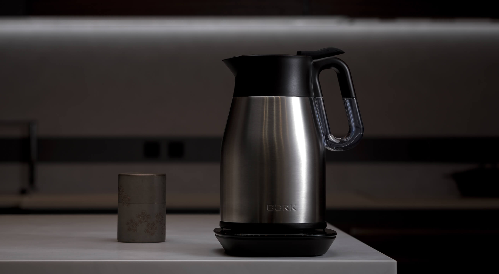
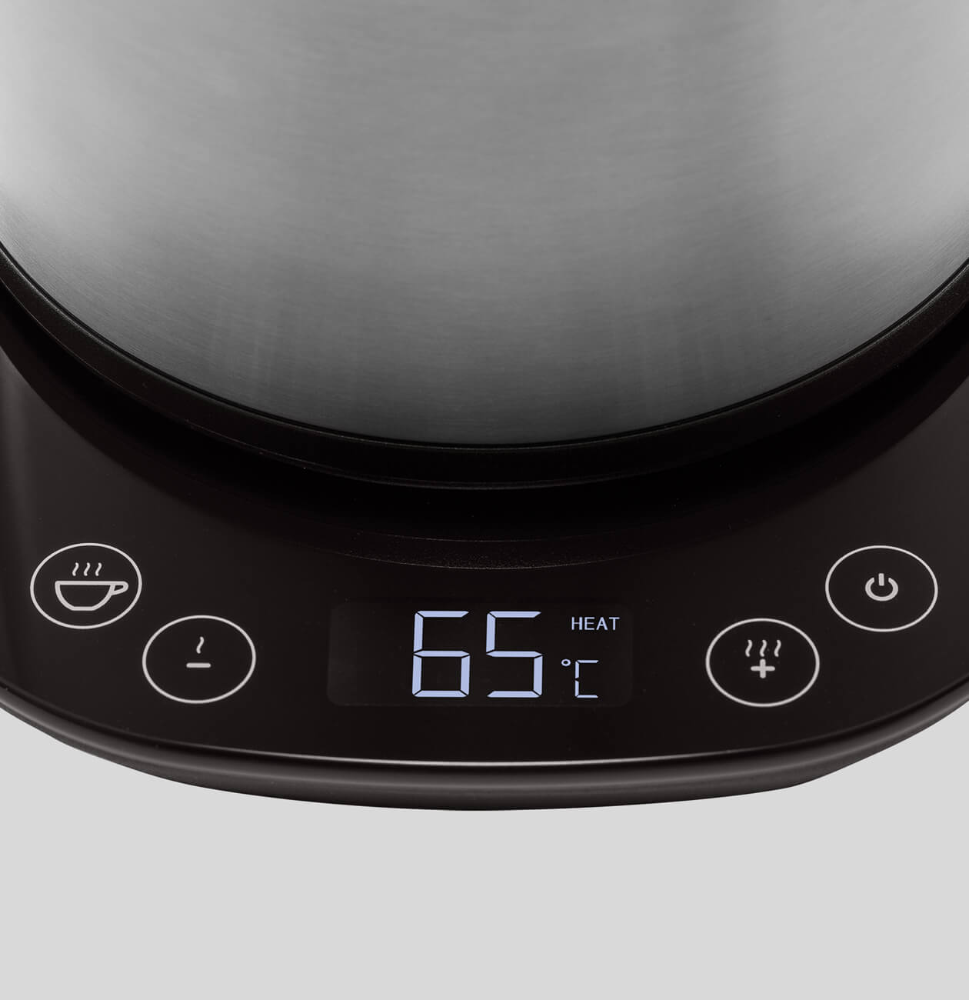
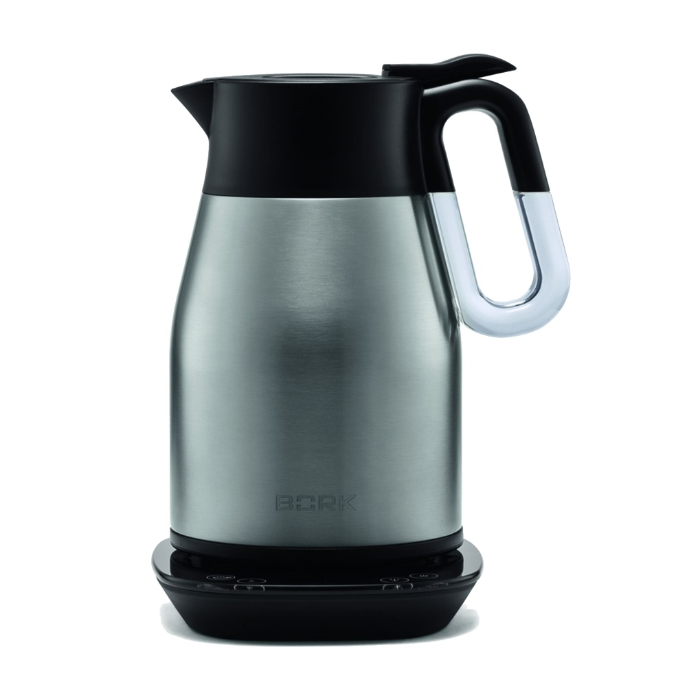
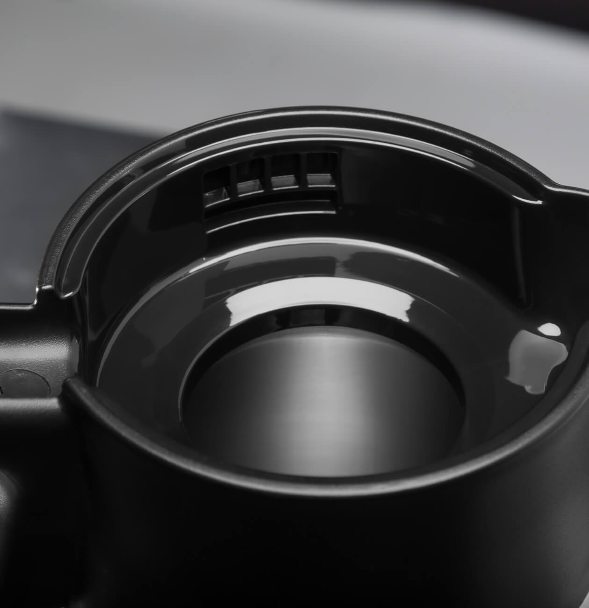
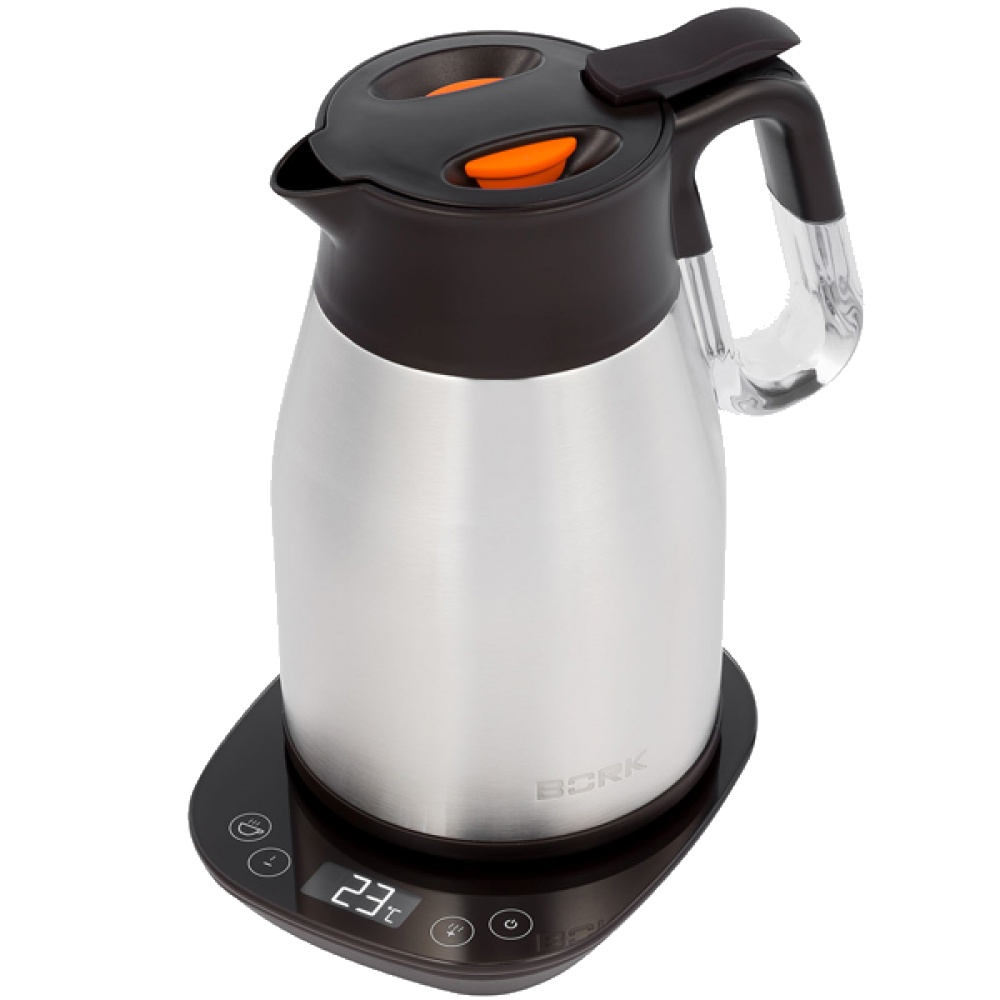

Чайник К600
Стильная новинка со свойствами термоса, сохраняющая тепло для семейных чаепитий.
Широкий выбор температур
BORK K600, позволяет выбрать температуру в диапазоне от 40°С до 100°С, с шагом в 5°С. Благодаря этому можно подобрать оптимальную температуру для заваривания различных видов чая и кофе, тем самым подчеркивая их неповторимый вкус. Это опция особенно важна для Мам, так как для приготовления детского питания, необходима вода температурой 40°С. В чайнике можно менять единицы измерения °C/°F. Для изменения единиц измерения удерживайте одновременно кнопки «–» и «+» в течение 3 секунд. Все настройки отображаются на информационном дисплее.
Преимущества» выбора температурных режимов:
- Высококачественный чай хорош настолько, насколько он правильно заварен!
- Позволяет избежать повторного кипячения, которое делает воду «мёртвой» и безвкусной.
- Затраты электроэнергии на подогрев воды в разы меньше, чем на её кипячение.
Функция поддержания заданной температуры KEEP WARM

Поддержание заданной температуры в течение 30 минут без дополнительного кипячения. Режим поддержания заданной температуры Keep Warm можно включить до, во время или после завершения цикла нагрева воды. При снижении температуры на 5°С и более в течение 30 минут чайник будет производить нагрев воды до нужной температуры. В режиме поддержания температуры, на дисплее отобразится индикация WARM.
Сохранение тепла
Чайник обладает свойствами термоса: двойные стенки корпуса отлично сохраняют тепло. Благодаря этому вода дольше держит нужную вам температуру, сокращается уровень энергопотребления и время на повторный нагрев.
Гарантированная безопасность
Минимальная степень нагрева наружной части корпуса делает чайник безопасным прибором на вашей кухне даже в присутствии детей. Помимо этого, специальная конструкция крышки препятствует проливанию воды при падении чайника или сильном наклоне, что защитит вас и ваших близких от ожогов.
Лёгкое и безопасное наливание

Идеальный угол наклона носика обеспечивает равномерную подачу воды, не образуя подтёков по корпусу и избегая пролива мимо чашки.
Контактная группа Strix

Strix уже давно зарекомендовал себя на рынке - основные преимущества заключаются в следующем:
- Полный набор защитных механизмов, которые обеспечивают максимальную безопасность при использовании чайников. Есть и отключение при перегреве нагревательного элемента, и защита скачков напряжения, а также - отключение, если чайник снимается до закипания.
- Конструкция контактных групп позволяет реализовать вращение чайника на подставке на 360 градусов, чтобы и правша, и левша мог использовать чайник с одинаковым удобством.
- Контактная группа Strix, рассчитана на 3 000 000 закипаний воды в чайнике
- Максимальная погрешность температур ± 3 ˚ С, такая точность, позволяет полностью раскрыть аромат и вкус, каждого из завариваемого чая.
Технические характеристики

Мощность 1850-2200 Вт
Объём 0,5 л - 1,5 л
Установка температуры Есть (от 40°С до 100°С)
Поддержание тепла До 30 мин
Материал корпуса Сталь, пластик
Срок гарантии 1 год
Фильтр от накипи Нет
Дисплей Есть
Автоотключение Есть
Звуковые сигналы Есть
Отключение без воды Есть
Нагревательный элемент Скрытый
Контакт с базой 360˚
Длина кабеля 1,05 м
Вес 1,8 кг
Тип управления Электронное
Страна производства Китай